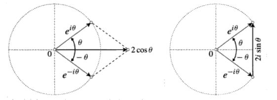
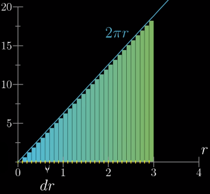
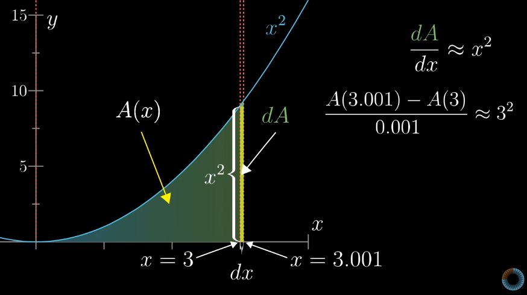
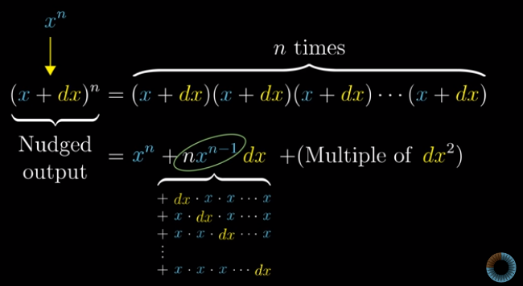
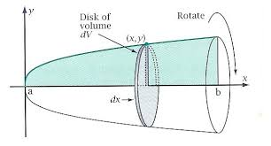
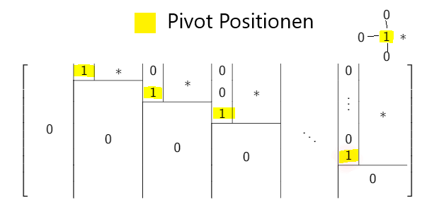
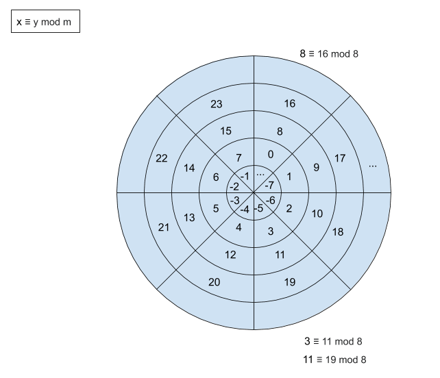
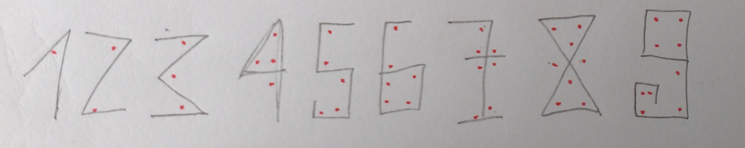

Mathematik
Links
- GeoGebra: https://www.geogebra.org/calculator
- Desmos: https://www.desmos.com/calculator
- Mandelbrot Viewer: http://math.hws.edu/eck/js/mandelbrot/MB.html
Analysis
- Analysis 1 (TIMMS) https://timms.uni-tuebingen.de/tp/UT_20141014_001_ana1b_0001
- Analysis 2 (TIMMS) http://timms.uni-tuebingen.de/List/List?id=UT_2015_____00%5B12%5D_ana2b_000_&Headline=Analysis%20II
- Analysis 3 (TIMMS) http://timms.uni-tuebingen.de/tp/UT_20151013_001_ana3c_0001
- Analysis 4 (TIMMS) http://timms.uni-tuebingen.de/tp/UT_20160415_001_ana4c_0001
Lineare Algebra
- Lineare Algebra 1 (TIMMS) https://timms.uni-tuebingen.de/tp/UT_20131015_001_lineal1_0001
Stochastik
- Stochastik für Informatiker und Bioinformatiker (TIMMS) https://timms.uni-tuebingen.de/tp/UT_20040421_001_stochastik_0001
Grundlagen
Definitionen
Wohldefiniertheit
Ein (sprachlicher) Ausdruck ist wohldefiniert bzw. eindeutig, wenn die Definition für ihn genau eine Bedeutung festlegt.
Repräsentantenunabhängigkeit
explizite Definition
implizite Definition
Beweise
Wie macht man keine Fehler? Gar nicht. Der Trick ist die Fehler durch sorgfältiges Testen zu finden.
Wie findet man Beweise? Von Definitionen ausgehen.
Induktionsbeweise
A(n) folgt A(n+1) Warum hat das oft was mit Rekursionen zu tun? In A(n+1) baut man meist A(n) ein und verwendet dann die Induktionsvoraussetzung (das ist der Witz).
Direkt an einem allgemeinen Beispiel zeigen
Das ist gemeint wenn angegeben wird, dass das folgende ohne Beschränkung der Allgemeinheit angenommen wird.
Z.B. nehmen wir allgemeine Indizes n, m an etc.
Gleichungen
Typen von Gleichungen
- Idenitätsgleichungen
- Bestimmungsgleichungen
- Definitionsgleichungen
Relations
For all \(x,y:\)
| reflexive | \(Rxx\) | |
| transitive | \(Rxy \wedge Ryz \rightarrow Rxz\) | |
| symmetric | \(Rxy \rightarrow Ryx\) | "x is a sibling of y" |
| asymmetric | \(Rxy \rightarrow \neg Ryx\) | "x is taller than y" |
| antisymmetric | \((Rxy \wedge Ryx) \rightarrow x=y\) | "x paid the bill of y" |
Order Relation
Preorder (Halbordnung)
- Reflexve
- Transitive
Partial Order
- Preorder
- Antisymmetric
Total Order
- Partial Order
- Connexity (Totalität)
Equivalence Relation
- Reflexive
- Transitive
- Symmetric
Elementary Functions
- Powers: \(x^2, x^3\) etc.
- Roots: \(\sqrt{x}, \sqrt[3]{x}\), etc.
- Exponential functions: \(e^x, a^x\)
- Logarithms: \(log(x)\)
- Trigonometric functions: \(sin(x), cos(x), arcsin(x), arccos(x)\) etc.
- Hyperbolic functions: \(sinh(x), cosh(x), arcsinh(x), arccosh(x)\) etc.
Compositions of the above and all functions obtained by: +,-,*,/
Trigonometry
Euler's Formula
$$\bbox[10px,#073642,border: 1px solid white]{e^{i \phi} = cos(\phi) + i\ sin(\phi)}$$
From this we get:
$$\bbox[10px,#073642,border: 1px solid white]{cos(\phi) = \frac{e^{i \phi} + e^{-i \phi}}{2} \ \ \ \ sin(\phi) = \frac{e^{i \phi} - e^{-i \phi}}{2i}}$$
If we get rid of the i's, we immediately get the hyperbolic functions: $$\bbox[10px,#073642,border: 1px solid white]{cosh(\phi) = \frac{e^{\phi} + e^{- \phi}}{2} \ \ \ \ sinh(\phi) = \frac{e^{\phi} - e^{- \phi}}{2}}$$

Using \((a+ib)(a-ib) = a^2+b^2\) we quickly get:
\[e^{i \phi} e^{-i \phi} = e^0 = 1 = sin(\phi)^2 + cos(\phi)^2\]
$$\bbox[10px,#073642,border: 1px solid white]{sin(\phi)^2 + cos(\phi)^2 = 1}$$
The exponential function allows us to derive trigonometric identities like this:
\[cos(\theta + \phi) + i\ sin(\theta + \phi) = e^{i(\theta + \phi)} = e^{i \theta}e^{i \phi}\] \[= (cos(\theta) + i\ sin(\theta))(cos(\phi) + i\ sin(\phi))\] \[= (cos(\theta) cos(\phi) - sin(\theta) sin(\phi) + i (sin(\theta) cos(\phi) - cos(\theta) sin(\phi))\]
Analysis
Intuitiver Zugang 1
Kreisfläche
Wie könnte man die Fläche eines Kreises berechnen?
Wie kommt man also zu folgender Formel? \[A= \pi R^2\]
Man teilt den Kreis in Ringe
Näherungsweise hat ein ausgerollter Ring die Fläche \(2 \pi r \cdot dr\). Wir legen jetzt die ausgerollten Ringe nebeneinander (Annahme: \(R = 3\)).

Je kleiner man \(dr\) wählt, desto genauer wird Approximation. Am Ende erhalten wir die Fläche des Dreiecks: \(A = \frac{1}{2} \cdot 2 \pi R \cdot R = \pi R^2\).
Das Problem reduziert sich am Ende auf die Berechung der Fläche unter einer Kurve.
Fläche unter einer Kurve
Wie berechnen wir die Fläche \(A(x)\) unter dem Graph von \(x^2\)?
Eine Änderung \(dx\) gibt Näherungsweise eine Änderung \(dA \approx x^2 dx\).

Dies lässt sich verallgemeinern: \(dA \approx f(x) dx\) oder: \(\frac{dA}{dx} \approx f(x)\) an jeder Stelle x. Je kleiner \(dx\) gewählt wird, desto kleiner ist der Fehler, der sich durch die Rechtecksapproximation ergibt.
Ableitungen
\(\frac{x^n}{dx}\) = ?

Folgen
Definition
Eine Folge ist nach unten beschränkt, wenn es ein \(a\) gibt, sodass für alle \(n\) gilt: \((a_n) \leq a\).
Eine Folge ist nach oben beschränkt, wenn es ein \(a\) gibt, sodass für alle \(n\) gilt: \((a_n) \geq a\).
Eine Folge ist beschränkt, wenn sie nach unten und nach oben beschränkt ist.
\(a\) heißt entsprechend untere und obere Schranke.
Definition Supremum
Eine Zahl \(a\) heißt kleinste obere Schranke oder Supremum falls gilt:
- \(a\) ist eine untere Schranke und
- es gibt keine untere Schranke, die kleiner ist
Definition Infimum
Größte untere Schranke.
Häufungspunkte (limit points) und Grenzwerte
Definition
Die Folge \((a_n)\) konvergiert gegen \(a\), wenn es zu jedem \(\epsilon > 0\) einen Index \(n_0\) gibt, so dass
für alle \(n>n_0\) gilt \(|a_n - a| < \epsilon\). \(a\) heißt Grenzwert der Folge \((a_n)\).
Satz
Eine konvergente Folge besitzt genau einen Grenzwert.
Satz
Jede Teilfolge einer konvergenten Folge hat den gleichen Grenzwert.
Definition
Eine Zahl \(a\) ist Häufungspunkt einer Folge \((a_n)\), wenn in jeder \(\epsilon\)-Umgebung von \(a\)
unendlich viele Folgenglieder liegen.
Satz von Bolzano Weierstraß
Jede beschränkte Folge hat mindestens einen Häufungspunkt.
Vergleich der Begriffe Grenzwert und Häufungspunkt.
| Grenzwert | Häufungspunkt | Anmerkung | |
|---|---|---|---|
| Wie viele kann eine Folge haben? | höchstens einen | mehrere, evtl. unendlich viele | GW ist auch HP. |
| In einer ε-Umgebung liegen | fast alle Folgenglieder | "nur" unendlich viele | |
| Konvergenz von Teilfolgen. | alle konvergieren gegen GW. | eine Teilfolge ist hinreichend. |
Funktionen
Grenzwert von Funktionen
Die Funktion \(f(x)\) konvergiert gegen \(c\) für \(x\) gegen \(x_0\), geschrieben
\[\lim_{x \to x_0}f(x) = c\]
wenn für jede \(\epsilon\)-Umgebung um \(c\) eine \(\delta\)-Umgebung um \(x_0\) existiert, sodass alle Funktionswerte für Argumente in der \(\delta\)-Umgebung in der \(\epsilon\)-Umgebung liegen.
Anschaulich: die Funktion bleibt beliebig nahe an \(c\). Auch: Man ignoriert den tatsächlichen Funktionswert in \(x_0\) (falls es ihn gibt) und fragt sich, wass denn der richtige Funktionswert sein müsste, ausgehend von der Umgebung von \(x_0\).
Man kann hier eine Folge von Funktionswerten \((f(x_i))\) erzeugen, diese muss gegen c konvergieren, wenn der Grenzwert der Funktion im Punkt \(x_0\) existiert.
Allerdings funktioniert das alles auch ohne Folge, wir betrachten dann nur ein \(\epsilon\)- und ein \(\delta\)-Intervall in dem die Punkte beliebig herumliegen.
Bemerkungen:
- Funktion muss nicht im Punkt \(x_{0}\) definiert sein.
Stetigkeit
Der Limes einer im Punkt \(x_0\) stetigen Funktion \(f(x)\) existiert und ist gleich dem Funktionswert in diesem Punkt.
Es gibt folgende Möglichkeiten, wie die Sache mit der Stetigkeit schief gehen kann:
- Der Grenzwert existiert nicht.
- Der Grenzwert existiert, ist aber nicht gleich dem Funktionswert.
- Der Grenzwert existiert, die Funktion ist aber im PUnkt \(x_0\) gar nicht definiert (siehe \(\frac{1}{n}\)).
Potenz- und Exponentialfunktion
Wir erklären zunächst was unter \(a^r\) zu verstehen ist.
Für natürliche Exponenten \(r\) ist die Sache klar. Aber wie sieht es mit rationalen und reellen Exponenten aus?
Definition
Eine p-te Wurzel (\(p \in \mathbb{N}\)) aus einer Zahl \(a \geq 0\) ist eine reelle Zahl \(w\) falls gilt:
- \(w \geq 0\)
- \(w^p = a\) oder \(\underbrace{w \cdot w \dots w}_{p-times} = a\)
- Schreibweise: \(w=\sqrt[p]{a}\) (siehe unten: \(w=a^{\frac{1}{p}}\))
Satz
Die p-te Wurzel existiert und ist eindeutig.
Definition: Potenz mit rationalem Exponenten
Wir nehmen nun einfach p-te Wurzeln und multiplizieren sie s-mal miteinander. Das gibt: \((a^{\frac{1}{p}})^s\).
Nun setzen wir \(s,p \in \mathbb{Z}\) indem wir negative Exponenten als die inversen Zahlen auffassen.
Wir definieren (\(a > 0\), \(r=\frac{s}{p}\).): \[a^r = \sqrt[p]{a^s} = a^{\frac{s}{p}}\] \[a^{-r}= \frac{1}{\sqrt[p]{a^s}} = \frac{1}{a^r} = a^\frac{p}{s}\]
Zudem wird wird festgelegt:
- \(0^r = 0\)
- \(a^0 = 1\)
Die p-te Wurzel ist der Spezialfall: \(w=a^{\frac{1}{p}}\). Die Gleichung hierzu war: \(w^p = a\).
Zu \(w = a^\frac{s}{p}\) gehört entsprechend die Gleichung: \(w^p = a^s\).
Definition: Potenz mit reellem Exponenten
Sei \(a>0\) und \(\rho \in \mathbb{R}\).
Wenn \(\rho\) irrational ist, suchen wir uns eine rationalen Folge \((r_n)\) for die gilt: \(r_n \to \rho\).
Nun definieren wir \[a^\rho = \lim_{n \to \infty} a^{r_n}\]
Dabei ist zu bedenken, dass für diese Definition der Grenzwert \(a^\rho\) immer existieren und von der speziellen Wahl der Folge \((r_n)\) unabhängig sein muss.
Je nachdem ob wir bei \(a^r\), \(a\) oder \(r\) als veränderlich auffassen, ergeben sich die Potenzfunktion oder die Exponentialfunktion.
$$\bbox[10px,#073642,border: 1px solid white]{f(x) = x^b}$$
$$\bbox[10px,#073642,border: 1px solid white]{f(x) = b^x}$$
Volumina von Rotationskörpern
Wir rotieren die Fläche unter einer Kurve \(f(x)\) um die x-Achse.

$$\bbox[10px,#073642,border: 1px solid white]{V = \pi \int_{a}^{b} f(x)^2 dx}$$
Begründung:
Volumen einer Kreisscheibe: \[\Delta V= \pi f(x_i)^2 \cdot \Delta x\]
Gesamtvolumen: \[V \approx \pi \sum_{i=1}^{n} f(x_i)^2 \cdot \Delta x\]
Grenzwert: \[V = \lim_{n \to \infty} \pi \sum_{i=1}^{n} f(x_i)^2 \cdot \Delta x = \pi \int_{a}^{b} f(x)^2 dx\]
Bogenlänge
Für eine Funktion \(f(x)\): $$\bbox[10px,#073642,border: 1px solid white]{s = \int_{a}^{b} \sqrt{1 + f^{'}(x)^2} dx}$$
Begründung:
Ein Stück angenähert durch eine Gerade: \[\Delta s = \sqrt{ \Delta x^2 + \Delta y^2}\]
\[\Delta y \approx f^{'}(x) \Delta x\]
\[\Delta s \approx \sqrt{\Delta x^2 + f^{'}(x)^2 \Delta x^2} \approx \Delta x \sqrt{1 + f^{'}(x)^2}\]
\[s \approx \sum_{i=1}^{n} \Delta s_i\]
\[s = \lim_{n \to \infty} \sum_{i=1}^{n} \Delta s_i = \int_{a}^{b} \sqrt{1 + f^{'}(x)^2} dx\]
Für eine Kurve in Parameterform: \(\vec{r(t)}=\begin{pmatrix}x(t)\\y(t)\end{pmatrix}\)
\[\Delta x \approx \dot{x}(t) \Delta t\]
\[\Delta y \approx \dot{y}(t) \Delta t\]
\[\Delta s = \sqrt{ \Delta x^2 + \Delta y^2} = \Delta t \sqrt{\dot{x}(t)^2 + \dot{y}(t)^2}\]
das gibt dann:
$$\bbox[10px,#073642,border: 1px solid white]{s = \int_{t_1}^{t_2} \sqrt{\dot{x}(t)^2 + \dot{y}(t)^2}dt}$$
Doppelintegral
Wie berechnet man das Volumen, das eine Funktion \(z=f(x,y)\) mit der x,y-Ebene einschließt?
\[\Delta V \approx f(x_i, y_j) \cdot \Delta x \cdot \Delta y\]
\[V \approx \sum_{i} \sum_{j} f(x_i, y_j) \cdot \Delta x \cdot \Delta y\]
Das Doppelintegral ist salopp so definiert:
\[V=\lim_{\Delta x \to 0} \lim_{\Delta y \to 0}\sum_{i} \sum_{j} f(x_i, y_j) \cdot \Delta x \cdot \Delta y = \iint_{A} f(x,y)dx dy\]
Differentialgleichungen
- Poissongleichung (Laplacegleichung)
- Bernoullische Differentialgleichung
Lineare Algebra
Ursprünge:
- Lösen von linearen Gleichungssystemen.
Matrizen
Rechenregeln
Transponierte Matrix
- \((A + B)^T = A^T + B^T\).
- \((AB)^T = B^TA^T\).
- \((A^T)^{-1} = (A^{-1})^T\) (wenn \(A\) invertierbar, dann auch \(A^T\)).
- \(Rg(A) = Rg(A^T)\) .
Rang einer Matrix
Treppennormalform
Jede Matrix kann durch elementare Zeilenumformungen in Treppennormalform überführt werden.

Anmerkung:
- Die ersten \(r\) Zeilen haben eine 1. Dazu korrespondieren \(j_1 - j_r\) Spalten (ausgezeichnete Spaltenindizes).
- Über und links der 1-er stehen nur 0-en.
Definition: Pivot-Positionen sind die Paare \((1, j_1) ... (r, j_r)\) (Zeile, Spalte).
Definition: Der Rang \(Rg(A)\) einer Matrix \(A\) ist die Anzahl von Pivot-Positionen in ihrer Treppennormalform.
Definition: Eine Matrix \(A \in M_{mn}(\mathbb{K})\) ist in Treppennormalform, wenn sie die Nullmatrix ist oder wenn es \(r\) Spaltenindizes \(j_1 < j_2 < ... < j_r\) gibt, sodass für alle \(1 \leq i \leq r\) gilt:
- \(a_{ij_i} = 1\) (Pivot-Positionen)
- \(a_{lj_i} = 0\) für alle \(j \neq i\) (oberhalb und unterhalb der 1er)
- \(a_{il} = 0\) für alle \(l < j_i\) (linkes der 1er)
- \(a_{kl} = 0\) für alle \(k > r\) und alle \(1 \leq l \leq n\) (der 0-Bereich ganz unten)
Satz: Die Treppennormalform ist eindeutig.
Elementare Zeilenumformungen und Elementarmatrizen
Betrachten wir zunächst elementare Zeilenumformungen bei Matrizen.
Definition: Sei \(A \in M_{mn}(\mathbb{K})\). Elementare Zeilenumformungen sind die folgenden Manipulationen an \(A\):
- \(Z_{ij}:\) Vertausche die i-te Zeile mit der j-ten Zeile, wobei.
- \(Z_i(r):\) Multipliziere die i-te Zeile mit dem Skalar \(r \neq 0 \in \mathbb{K}\).
- \(Z_{ij}(s):\) Addiere das s-fache der j-ten Zeile zur i-ten Zeile, wobei \(s \in \mathbb{K}\) und \(i \neq j\).
Dann wird der Begriff der Elementarmatrix (\(P_{ij}, D_i(r), T_{ij}(s)\)) definiert.
- \(P_{ij}A\) wird aus \(A\) durch \(Z_{ij}\) gewonnen (Zeilenvertauschung).
- \(D_i(r)A\) wird aus \(A\) durch \(Z_i(r)\) gewonnen (Multiplikation mit Skalar).
- \(T_{ij}(s)A\) wird aus \(A\) durch \(Z_{ij}(s)\) gewonnen (Addition mit s-fachem einer anderen Zeile).
Hilfreich ist noch folgende Definition einer Matrix \(E_{ij}\), die überall 0 ist, außer an einer Stelle, wo sie 1 ist.
Definition: Sei \(E_{ij} \in M_{mn}(\mathbb{K})\) jene Matrix, die an der Stelle \((i,j)\) den Eintrag 1 hat, und überall sonst 0.
Satz: Elementarmatrizen sind invertierbar und die Inversen sind wieder Elementarmatrizen.
Gaußalgorithmus
Systematisches Verfahren um eine Matrix auf Treppennormalform zu bringen.
Vorgehensweise:
- Man bringt von links nach rechts eine Spalte nach der anderen auf Treppennormalform.
Lineare Gleichungssysteme
Determinanten
Sei \(S_n\) die symmetrische Gruppe in \(n\) Buchstaben. \(sgn(\sigma)\) ist die Signatur von \(\sigma \in S_n\).
Definition: Die Determinante von \(A=(a_{ij} \in M_{nn}(R))\) ist folgendes Element des Ringes \(R\) (Leibnizformel):
$$\bbox[10px,#073642,border: 1px solid white]{det(A) = \sum_{\sigma \in S_n}sgn(\sigma)a_{1\sigma(1)}a_{2\sigma(2)}\dots a_{n\sigma(n)}}$$
Anmerkungen:
Cramer'sche Regel
Adjunktensatz
Satz von Cayley-Hamilton
Eigenwerte
Normalformen
Diagonalisierbarkeit
Nilpotenz
Jordan'sche Normalform
Bilinearformen
Sesquilinearformen
Vektorräume
Definition: Ein Vektorraum \(V\) auf einem Körper \(\mathbb{K}\) ist eine Menge \(V\) mit einer Verknüpfung \(+\) (Vektoraddition) und einer Abbildung \(\cdot\) (Skalarmultiplikation):
- \(+:V\times V \rightarrow V\). Für alle \(v,w \in V: (v,w) \mapsto v+w\).
- \(\cdot : \mathbb{K} \times V \rightarrow V\). Für alle \(a \in \mathbb{K}, v \in V: (a,v) \mapsto a \cdot v\).
Es gelten die folgenden Regeln:
Vektoraddition Für alle \(u,v,w \in V\):
- Kommutativität: \(v + w = w + v\).
- Assoziativität: \((u+v)+w = u+(v+w)\).
- Neutrales Element (\(0 \in V\)): \(v + 0 = v\).
- Inverses Element (\(v' \in V\)): Zu jedem \(v \in V\) gibt es ein \(v' \in V : v+v'=0\).
Skalarmultiplikation
- Für alle \(a,b \in \mathbb{K}\) und alle \(v \in V\) gilt: \((ab) \cdot v = a \cdot (b \cdot v)\).
- Einselement: Für \(1 \in \mathbb{K}\) gilt für alle \(v \in V\) \(1 \cdot v = v\).
Distributivgesetze Für alle \(a,b \ \mathbb{K}\) und \(v_1, v_2 \ in V\):
- \(a \cdot (v_1+v_2) = a \cdot v_1 + a \cdot v_2\).
- \((a+b) \cdot v_1 = a \cdot v_1 + b \cdot v_1\).
Anmerkungen:
- Vorsicht mit der Bedeutung der Zeichen \(\cdot\) und \(+\) ist geboten. Für den Vektorraum und den Körper ist sie jeweils verschieden.
Unterräume
Definition: Eine Teilmenge \(U \neq \emptyset\) eines Vektorraums \(V\) nennt man Unterraum von V, wenn \(U\) mit der Addition und der Skalarmultiplikation in \(V\) einen Vektorraum bildet.
Anmerkungen:
- Ein Unterraum ist also eine Teilmenge eines Vektorraums, die selbst wieder ein Vektorraum ist.
Endlich erzeugte Vektorräume
Vector Calculus
Concerned with functions assigning vectors to its input domain.
Most important: vector fields (assigning vectors to locations in space)
Examples:
- Wind velocity for location (x,y)
- Electric Field for location (x,y,z)
- Gradient : vector of the partial derivatives of a scalar function
- Field Lines : curve following the vectors, i.e. the vectors of a vector field
2 ways of differentiation
- Divergence :
- Curl :
2 ways of integration
- Line Integral
- Surface Integral
Algebraische Strukturen
Grundsätzlich ist eine AS eine Menge mit mindestens einer Verknüpfung. Intuitiv: Man verknüpft Objekte und erzeugt damit neue Objekte.
Es geht darum Gleichungen zu lösen. Was man dafür braucht sind bestimmet Eigenschaften von Verknüpfungen und neutrale Elemente.
Äquivalenzrelationen
Definition: Die Teilmenge \(R \subseteq M \times M\) heißt Äquivalenzrelation (Schreibweise: \(x \sim y\)) auf \(M\), wenn für alle \(x,y,z \in M\) gilt:
- Reflexivität: \((x,x) \in R\).
- Symmetrie: Wenn \((x,y) \in R\), dann \((y,x) \in R\).
- Transitivität: Wenn \((x,y) \in R\) und \((y,z) \in R\), dann \((x,z) \in R\).
Äquivalenzklassen
Definition: Sei \(M\) eine Menge und \(R\) eine Äquivalenzrelation auf \(M\). Eine Teilmenge \(C \subseteq M\) heißt Äquivalenzklasse bezüglich \(R\), wenn gilt:
- \(C \neq \emptyset\).
- Wenn \(x,y \in C\), dann \(x \sim y\).
- Wenn \(x \in C\) und \(y \in M\) mit \(x \sim y\), dann \(y \in C\).
Satz: Sei \(R\) eine Äquivalenzrelation auf \(M\). Dann liegt jedes \(x \in M\) in genau einer Äquivalenzklasse von \(M\) bezüglich \(R\).
Satz: Sei \(M \neq \emptyset\) und \(R\) eine Äquivalenzrelation auf \(M\). Seien \(C_1\) und \(C_2\) Äquivalenzklassen bezüglich R. Dann sind \(C_1\) und \(C_2\) disjunkt (oder identisch). D.h. jede Äquivalenzrelation auf einer nicht leeren Menge liefert eine Zerlegung in disjunkte Äquivalenzklassen.
Definition: Die Zerlegung einer nicht leeren Menge \(M\), hervorgerufen durch die Äquivalenzrelation \(R\) auf \(M\), heißt Klasseneinteilung von \(M\) bezüglich \(R\).
Beispiel Zeilenäquivalenz
Definition: Seien \(A,B \in M_{mn}(\mathbb{K})\) zwei Matrizen und \(\mathbb{K}\) ein Körper. \(A\) und \(B\) sind zeilenäquivalent, wenn es endlich viele Elementarmatrizen \(E_1,..., E_r\) gibt, so dass \(A=E_1 \cdots E_r B\) ist. Ist das der Fall, so schreibt man \(A \sim_\mathbb{Z} B\).
Das besagt gerade, dass \(B\) aus \(A\) durch elementare Zeilenumformungen erzeugt werden kann (und umgekehrt).
Beispiel Vektorraum
- \(V\) ist ein Vektorraum auf dem Körper \(\mathbb{K}\).
- \(U\) ist ein Unterraum von \(V\).
\(v \sim w\), wenn gilt: \(v-w \in U\) (zwei Vektoren sind äquivalent, wenn ihrer Differenz im selben Unterraum landet).
Beispiel Modulorelation
Für \(n>1 \in \mathbb{N}\) und \(a, b \in \mathbb{Z}\) sei \(a \sim_n b\) (\(a\) ist äquivalent \(b\) modulo \(n\)), wenn gilt \(n\ |\ a-b\), d.h. wenn es ein \(x \in \mathbb{Z}\) gibt, sodass \(nx=a-b\).
- \(\sim_n\) ist eine Äquivalenzrelation.
- \(\mathbb{Z} = \overline{0} \cup \overline{1}\ \cup ... \cup \ \overline{n-1}\).
Definition: Die Menge \(\left\{ a + kn\ |\ k \in \mathbb{Z}\right\}\) heißt Restklasse (Kongruenzklasse) von \(\mathbb{Z}\) nach \(n \mathbb{Z}\) oder Restklasse von \(\mathbb{Z}\) modulo \(n \mathbb{Z}\) und wird mit \(\bar{a}\) bezeichnet.
Anmerkungen:
- Für verschiedene (sogar unendlich viele) \(as\) erhält man dieselbe Menge. Für \(n=3\) ist z.B. \(\cdots = \overline{-3} = \overline{0} = \overline{3}=\cdots\). Diese Menge hat unendlich viele Namen (z.B. für jedes Element \(a \in \overline{0}\) gibt es auch den Namen \(\overline{a}\).)
Die Klasseneinteilung von \(\mathbb{Z}\) bezüglich \(\sim_n\) ist \(\mathbb{Z}/n\mathbb{Z} = \left\{ \overline{0}, \overline{1}, ..., \overline{n-1} \right\}\) mit den Elementen (ein bestimmtes \(n > 1 \in \mathbb{N}\) und ein unbestimmtes \(k \in \mathbb{Z}\))
Anmerkungen:
- Die \(n-\) Mengen \(\overline{0}\) etc. sind für ein bestimmtes \(n\) zu verstehen. Mit \(kn\) sind also nicht etwa alle möglichen Kombinationen gemeint. Nur das \(k\) läuft über \(\mathbb{Z}\), das \(n\) ist fix. (Genauer müsste man \(\overline{0}_n\) notieren.)
Beispiel: \(n=3\). Die Äquivalenzrelation \(\sim_3\) teilt \(\mathbb{N}\) in 3 Äquivalenzklassen:
Rechnen mit Restklassen
Es werden zwei Verknüpfungen \(+\) und \(\cdot\) definiert, die festlegen wie man die obigen (unendlichen) Mengen addieren und multiplizieren kann.
Die beiden Verknüpfungen werden folgendermaßen festgelegt:
- \(\overline{a} + \overline{b} = \overline{a + b}\)
- \(\overline{a} \cdot \overline{b} = \overline{a \cdot b}\)
Eine Verknüpfung * (Gruppen)
Eigenschaften der Verknüpfung *
Sei \(*\) eine Verknüpfung auf einer Menge M.
- \(*\) heißt kommutativ, wenn für \(a,b \in M\) gilt: \(a*b = b*a\).
- \(*\) heißt assoziativ, wenn für \(a,b,c \in M\) gilt: \((a*b)*c = a*(b*c)\).
- (z.B. verletzt bei : und - 8:4:2 oder 3-2-1)
- \(*\) besitzt ein neutrales Element e wenn für \(e \in M\) gilt: \(a*e = a\) und \(e*a=a\).
Definition: Die Verknüpfung \(*\) habe ein neutrales Element \(e\). Ein Element \(m \in M\) heißt invertierbar, wenn es ein \(m'\in M\) gibt, so dass gilt:
- \(m * m' = e\).
- \(m' * m = e\).
Halbgruppen
Gruppen
Definition: \(*\) Eine nicht leere Menge \(G\) mit einer Verknüpfung \(*\) ist eine *Gruppe \((G, *)\) wenn gilt:
- \(*\) ist assoziativ.
- \(*\) hat ein neutrales Element.
- jedes Element in G ist invertierbar.
Ist \(*\) auch noch kommutativ, dann heißt \((G,*)\) abelsche Gruppe.
Die symmetrischen Gruppen
Wir betrachten zunächst die Menge aller bijektiven Abbildungen auf einer nicht leeren Menge \(M\).
\(S_M = \left\{f: M \rightarrow M \mid f \text{ ist bijektiv}\right\}\).
Hinzu kommt die Komposition der Abbildungen als Verknüpfung \(\circ\).
- \(\circ\) ist assoziativ.
- Neutrales Element: die identische Abbildung \(id_M \in S_M\) (trivialerweise bijektiv).
- \(f^{-1}\) liegt wegen der Bijektivität in \(S_M\) und es gilt: \(f \circ f^{-1} = f^{-1} \circ f = id_M\).
D.h. \((S_M, \circ)\) ist eine Gruppe. Sie heißt symmetrische Gruppe auf M.
Definition: Wenn \(M = \left\{ 1, \dots n \right\}\), dann heißt \((S_M, \circ)\) symmetrische Gruppe in \(n\) Buchstaben. Ein Element \(\sigma \in S_M\) heißt Permutation.
Zwei Verknüpfungen +,* (Ringe, Körper))
Ringe
- Addition +
- assoziativ: \((a*b)*c = a*(b*c)\)
- neutrales Element: 0
- alle Elemente invertierbar
- kommutativ
- Multiplikation *
- Distributivgesetze
- (Kommutativgesetz - kommutativer Ring)
Integritätsbereiche
Für Elemente \(r_1\), \(r_2\) ungleich 0 folgt \(r_1 * r_2 \neq 0\).
Körper
Integritätsbereich mit einem neutralen Element bzgl. + (0) und einem neutralen Element bzgl. * (1). Damit sind alle Elemente außer 0 invertierbar.
Hauptsatz der Algebra
Group Theory
Groups are used to describe symmetry.
Transformations
- Rigid transformations: Move a figure so that it's outer shape stays the same. E.g. rotate a square by multiples of 90°. I.e. points of the figure move around
- Rotation: Turn the figure but don't move it.
- Translation: Move the figure around but don't rotate it.
- Reflection: Mirror the figure across a line. In the 2D-case it can be thought of as a 180°-rotation in the 3rd dimension.
Example: Rubics Cube
Transformations can be combined resulting in a new transformation. The new transformation is called the product.
- Symmetry
- Rigid Transformation of an object to itself.
Abgeschlossenheit (closure)
A set is closed under an operation. In that case it has the closure property.
Eine Menge ist bezüglich einer Verknüpfung abgeschlossen, wenn die Verknüpfung beliebiger Elemente wieder in der Menge landet.
Transitive Hülle (transitive closure) einer Relation
Die transitive Hülle einer zweistelligen Relation ist diese Relation erweitert um diejenigen Paare, die Elemente verbinden, die sich indirekt in dieser Relation stehen. Dadurch wird die neue Relation transitiv.
Anschauliches Beispiel mit Hilfe eines Graphen. Die ursprüngliche (nicht transitive) Relation ist mit die durchgehenden Linien dargestellt.

B und D sind nur indirekt verbunden, deshalb wird eine direkte Verbindung von B und D hinzugefügt. Anmerkung: Ist ein Knoten isoliert, bleibt er isoliert.
Stochastik
Statistik
Was ist Statistik?
Ganz allgemein: Die Lehre vom Umgang mit empirischen Daten. Einerseits können Daten beschrieben werden (Mittelwert, Verteilung, etc. Deskriptive Statistik) andererseits können aus Daten induktive Schlüsse gezogen werden (Inferenzstatistik). Man schließt von vorliegenden Daten auf Eigenschaften einer Grundgesamtheit. (Man kostet z.B. einen Löffel Suppe um festzustellen ob der ganze Topf versalzen ist.)
Woher die Unsicherheit? Es gibt nun einmal stochastische Prozesse, ob sie an unserer Beschränktheit liegen oder tatsächlich in der Natur vorkommen ist praktisch ohne Belang. Beim Würfeln wird davon ausgegangen, dass das Ergebnis des Wahrscheinlichkeitsexperiments deterministisch zustande kommt, allerdings ist eine Vorhersage für uns praktisch unmöglich. Für Messwerte und ihre Genauigkeit sind Schätzwerte anzugeben und es stellt sich die Frage wie solche Schätzungen sinnvoll vorgenommen werden sollen.
Statistik ist nicht das Gleiche wie Wahrscheinlichkeitsrechnung, erstere hat mit der Realität zu tun, zweitere nicht (a priori).
Anwendungsbeispiele:
- Schätzung des Ausgangs einer politischen Wahl durch Stichprobenbefragung.
- Lebensdauer einer Glühbirne, Data Retention für EE, …
- Häufigkeit einer bestimmten Erkrankung in einem Land, Kontinent, weltweit.
- MSA: Vergleich von zwei Messsystemen
Wahrscheinlichkeitsrechnung (nicht gleich Statistik)
- Wahrscheinlichkeit
Der anschaulichste Wahrscheinlichkeitsbegriff ergibt sich über den Begriff der Häufigkeit. Die Wahrscheinlichkeit wird dabei als Grenzwert der Häufigkeit einer unendlichen Folge von Versuchen gedeutet.
- Wahrscheinlichkeitsdichte
Integral über ein Intervall gibt eine Wahrscheinlichkeit (Gesamtfläche = 1).
Deskriptive Statistik
Beschreibung, Darstellung von Daten mittels Kennwerten, Grafiken, Tabellen
Kenngrößen:
- Mittelwert
- Medianwert
Der Medianwert ist nützlich bei der Bewertung von sehr schiefen Verteilungen, z.B. Vermögensverteilung in Österreich : Mittelwert = 265.000 EUR, Medianwert = 76.500 EUR
Bei Normalverteilung fallen die beiden Werte zusammen.
Inferenzstatistik
Induktive S., Schluss von Stichprobe auf Grundgesamtheit. Grundlage: Wahrscheinlichkeitstheorie Ermöglicht die Überprüfung von Hypothesen. Stichproben Schluss von Eigenschaften einer Stichprobe auf Eigenschaften der Grundgesamtheit.
Zufällige Auswahl:
- Zufallsstichprobe: alle Teilmengen gleichwahrscheinlich
- Klumpenstichprobe:
- Geschichtete Stichprobe:
Bestimmet Auswahl:
- Theoriegeleitete Stichprobe
Standardfehler Standardabweichung der Mittelwerte von gleichgroßen Stichproben Konfidenzintervalle Schätzung von Populationsparametern Hypothese Annahme von Eigenschaften, anschließende Überprüfung.
Alternativhypothese H1 : die neue H. = not (Nullhypothese H0)
Unterschiedshypothesen: Häufigkeitsvergleiche Zusammenhangshypothesen: Korreltationsrechnung
Gerichtete H.: besser / schlechter Ungerichtete H.: indifferent Tests Irrtumswahrscheinlichkeit
Ideen
- Normalverteilung
Weiß man den Erwartungswert + Standardabweichung, dann weiß man alles über die Normalverteilung.
Wahrscheinlichkeitstheorie
Kombinatorik
Laplace Modelle: alle Ereignisse gleich wahrscheinlich. Die Bestimmung der Wahrscheinlichkeiten führt auf das Abzählen der Elemente einer Menge.
- Permutationen
- Auf wie viele Arten kann man n Dinge anordnen?
\(n \cdot (n-1) \cdot (n-2)\ ...\ 3 \cdot 2 \cdot 1\)
Summenregel (ODER, Vereinigung)
Gibt die Wahrscheinlichkeit, dass min. eines von zwei Ereignissen eintritt.
\(P(A \cup B)=P(A)+P(B)\)
Dabei ist es relevant, ob die beiden Ereignisse sich ausschließen, oder nicht. Mit anderen Worten, ob Ereignisse unabhängig sind, oder nicht.
Beispiele:
- Unabhängige Ereignisse: Münzwurf, Würfel
- Abhängige Ereignisse: Urnenziehung ohne Zurücklegen
Wir wählen zufällig eine Zahl von 1 bis 100. Wie hoch ist die Wahrscheinlichkeit, dass die Zahl größer 80 oder kleiner 10 ist?
- P(x>80) = 0.2
- P(x<10) = 0.1
- P(x>80 oder x<10) = 0.2 + 0.1 = 0.3
Produktregel (UND, Durchschnitt)
Gibt die Wahrscheinlichkeit, dass beide Ereignisse eintreten.
\(P(A \cap B)=P(A) \cdot P(B)\)
Voraussetzung: die Ereignisse sind unabhängig
Urnenmodell
Laplace-Experiment
Ein Zufallsexperiment bei dem jedes Ergebnis mit der gleichen Wahrscheinlichkeit eintritt.
Laplace'sche Wahrscheinlichkeitsregel
\(P(A)=\frac{\mid A \mid}{\mid \Omega \mid}\) (relative Häufigkeit)
- \(\Omega\) … Ereignismenge
- \(A\) … Menge der günstigen Ergebnisse
Wir stellen uns nun eine Urne vor mit farbigen Kugeln, die zudem nummeriert sind (z.B. Urne = {g1, g2, b1, b2, b3, r1, r2, r3}).
Urnenmodelle beschreiben Laplace Experimente, d.h. jede Kugel wird mit der gleichen Wahrscheinlichkeit gezogen.
\(P(K_i)=\frac{1}{N}\)
Alle Möglichkeiten Kugeln zu ziehen kann man in einem Baumdiagramm darstellen. Wahrscheinlichkeiten entlang eines Pfades werden multipliziert, W. auf parallelen Pfaden addiert.
Ziehen mit Zurücklegen
Die Wahrscheinlichkeit eine Kugel zu ziehen ist immer gleich. Bei mehrfacher Ziehung multiplizieren sich die Wahrscheinlichkeiten nach der Produktregel.
Ziehen ohne Zurücklegen
Die Wahrscheinlichkeit ändert sich bei jeder Ziehung.
mit und ohne Beachtung der Reihenfolge (geordnete Ziehung)
Betrachten wir folgende Fragen: (Urne: {r1, b1}, mit Zurücklegen)
Wie hoch ist die Wahrscheinlichkeit zuerst eine blaue und dann eine rote Kugel zu ziehen?
\(P = \frac{1}{2} \cdot \frac{1}{2} = \frac{1}{4}\)
Wie hoch ist die Wahrscheinlichkeit eine blaue und eine rote Kugel zu ziehen?
\(P = \frac{1}{4} + \frac{1}{4} = \frac{1}{2}\) Zuerst eine rote dann eine blaue ODER zuerst eine blaue und dann eine rote.
Beachtet man die Reihenfolge nicht, dann
hat etwas mit Permutationen zu tun
Zufallsvariable, Erwartungswert, Varianz
Eine Funktion, die einer Menge von zufälligen Ereignissen eine andere Menge zuordnet.
Bedingte Wahrscheinlichkeit und Unabhängigkeit
- Bedingte Wahrscheinlichkeit
Die bedingte Wahrscheinlichkeit P(A|B) des Eintretens von Ereignis A ist die Wahrscheinlichkeit es Eintretens von Ereignis A, vorausgesetzt Ereignis B ist bereits eingetreten.
Beispiel
Ein Paar hat 2 Kinder, von denen eines ein Mädchen ist. Wie hoch ist die Wahrscheinlichkeit, dass das zweite Kind auch ein Mädchen ist?
(Man ist vielleicht versucht 0.5 zu antworten.)
Die Möglichkeiten sind: MM MB BM BB
Bedingung 1 (B1): Ein Kind ist ein Mädchen (P(B1) = 3/4). Bedingung 2 (B2): Das andere Kind ist auch ein Mädchen (P(B2) = 1/2).
B1 schränkt die Anzahl der Möglichkeiten auf 3 ein. Innerhalb dieser Möglichkeiten ergibt sich eine Wahrscheinlichkeit von 1/3, weil einer der drei Fälle (MM MB BM) der günstige (MM) ist. Der Fall BB ist durch Bedingung 1 ausgeschlossen.
Jede Bedingung schränkt die Anzahl der Möglichkeiten ein.
Bayes Theorem
$$\bbox[10px,#073642,border: 1px solid white]{P(A \mid B) = \frac{P(B \mid A) \cdot P(A)}{P(B)}}$$
Example: Shy Philosophy Student Show
You meet a shy person on campus. Is he more likely to be a philosophy student or a business student?
Let's say:
- 90% of philosophy students are shy.
- 10% of business students are shy.
- There are 15x more business students than philosophy students.

Let's compare the 2 shy-areas:
- 9/10 1/16 Area (Philosophy) = 9/160 Area
- 1/10 15/16 Area (Business) = 15/160 Area
Let's state some facts:
- The shy person we meet is in the shy-area (90%,10%).
- P(shy) = 24/160
- P(philosophy student) = 1/16
- P(business student) = 15/16
- P(shy | philosophy student) = 9/10
- P(shy | business student) = 1/10
Now the final questions:
- What's the probability that he is a philosophy student?
- So P(philosophy student | shy) = 9/24 (part of the shy area)
- What's the probability that he is a business student?
- P(business student | shy) = 15/24
Looking at this closely we can figure out Bayes Theorem:
- P(shy) P(philosophy student | shy) = 24/160 9/24 = 9/160
- Now this is 9/10 1/16, which is
- P(shy | philosophy student) P(philosophy student)
So:
- P(shy) P(philosophy student | shy) = P(shy | philosophy student) P(philosophy student)
- and with A = shy, B = philosophy student
- P(A|B) = P(B|A) P(A) / P(B)
The Prosecutors Fallacy
DNA matching The “match probability” answers the question “What is the probability that an individual’s DNA will match the crime sample, given that he or she is innocent?”
Condition: Many (almost all) are innocent. (large population)
But the question that should concern the court is “What is the probability that the suspect is innocent, given a DNA match?”
Condition: Very few people have a matching DNA (small population)
Beispiele
Münzen, Würfel, Karten, Lotto, Urnen
Skalenniveau (Messniveau)
Je nach Art eines Merkmals bzw. der Methodik seiner Messung unterscheidet man vier Skalenniveaus.
| Eigenschaften | Beispiel | |
|---|---|---|
| Nominalskala | Identität | Postleitzahlen |
| Ordinalskala | Ordnung | Schulnoten |
| Intervallskala | Abstand | Datum |
| Verhältnisskala | Nullpunkt | Alter |
Central Limit Theorem
- Zentraler Grenzwertsatz
Werden viele Stichproben gezogen, so nähert sich der Mittelwert der Stichprobenmittelwerte dem Mittelwert der Gesamtpopulation. Voraussetzung: σ beschränkt
Coin Example
Let's flip a coin many times. Then choose a number n. Now the probability of getting n-times heads in a series of t-flips will approach a normal curve, the mean value being t/2.
Simple version of the CLT:
The distribution of the sampling means approaches a normal distribution when the sample size gets bigger independent of the population distribution.
Let's apply this to the coin example. If we flip the coin e.g. 100 times (t is 100) we should get about 50 heads and 50 tails, sometimes less heads and more tails, sometimes the other way round. The average number of heads we get is about 0.5 (= the sum of each result divided by 100).
If we flip 100 times again and again and again etc., the average will come out a little different each time. The distribution of the average however will be a normal distribution.
Zahlentheorie
Modulare Arithmetik

Kleiner fermatscher Satz
$$\bbox[10px,#073642,border: 1px solid white]{a^p \equiv a\ (mod\ p)}$$ oder $$\bbox[10px,#073642,border: 1px solid white]{a^{p-1} \equiv 1\ (mod\ p)}$$
Topologie
Homöomorphismus - Strecken, Verbiegen, Dehnen, Verzerren, etc. (benachbarte Punkte bleiben benachbarte Punkte)
Loslösung vom Abstandsbegriff -> Begriff der Umgebung (Teilmengen)
alg. Topologie: Abbildungen mengenth. Topologie: top. Räume
1.) Definition einer Topologie
| Topologie / Topologischer Raum |
Eine Menge X, eine Topologie T ist eine Menge von Untermengen von X mit best. Eigenschaften.
discrete T. / disc. T. Space
T umfasst alle Teilmengen von X (Potenzmenge - per se eine Topologie)
| offene Menge |
Anschaulich ist eine Menge offen, wenn ihre Elemente nur von Elementen dieser Menge umgeben sind, mit anderen Worten, wenn kein Element der Menge auf ihrem Rand liegt.
jeder Pkt. ist von einem Pkt. desselben Intervalls umgeben
d. Konjunktion / Disjunktion ist wieder offen
| abgeschlossene Menge |
| Homöomorphismus |
bijektive (eineindeutig + rechtstotal) stetige Abbildung, deren Umkehrabb. ebenfalls stetig ist anschaulich: Dehnen, Stauchen, Verbiegen, Verzerren, Verdrillen, … (T. handelt von Eigenschaften, die unter H. invariant sind.)
Trivia
Arabische Ziffern

Quadratische Gleichung

Continuum Hypothesis
Paul Cohen proved 1963 that the CH is independent.
Irrational Numbers
Examples:
- 0.12345678910111213141516171819202122232425…
- Champernowne's Constant
- Contains the decimal representations of all natural numbers.
- Contains all possible digit sequences (infinitely many times).
- 0.101001000100001…
- 1, 2, 3, 4, … Zeros in between the 1s.
- 1 + 1 = 2, 2 + 2 + 1 = 5, 5 + 3 + 1 = 9,
- 0, 2, 5, 9, …
- 0.1 + 0.001 + 0.000001 + 0.0000000001 + …
- \(10^{-1} + 10^{-3}\) + 10^{-6} + …$
- we observe that: \(\frac{n(n+1)}{2}\) gives the sequence: 0, 1, 3, 6, 9, …
- so we get \(\sum_1^\infty10^{-\frac{n(n+1)}{2}}\).
- Obviously doesn't contain all possible digit sequences.
- π, ε, \(sqrt{2}\)
- We don't know if it's decimal representation contains all possible digit sequences.